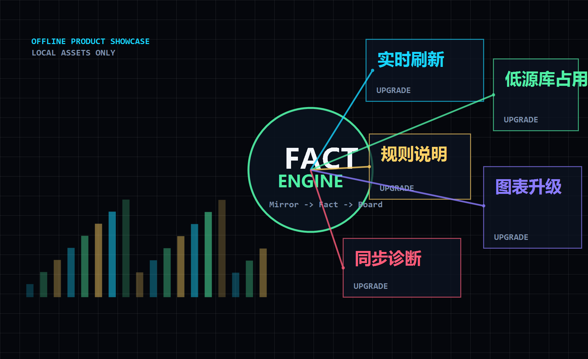

实时更新链路
页面可触发最新数据刷新，镜像同步完成后自动推进事实层刷新，减少人工等待和重复操作。

Offline Executive Showcase
实时刷新、低侵入同步、可解释统计、现代图表与可配置表格集中到一个内网可用的展示界面。 后续进入真实平台前，这一页用来快速打出升级感。
Impact Numbers
以下为汇报展示口径，可在 app.js 中替换为实测数据。
Upgrade Map
页面可触发最新数据刷新，镜像同步完成后自动推进事实层刷新，减少人工等待和重复操作。
通过镜像表、本地事实层和增量水位读取，把重查询压力从 GitLab 主库迁出。
记录页和统计看板共享条件构建器，支持组合条件、分页、排序、导出和下钻联动。
每个看板可展示数据来源、过滤流程、指标定义和样例，方便客户现场追问时快速解释。
用户可调整统计表偏好、列宽、排序和分页状态，减少“每次重新找数据”的低效体验。
全量、增量、单表刷新、补偿、取消、队列、状态诊断统一到一个同步运行模型。
Sync Engine
老方式更像“每张表各跑各的”。新平台把运行单、表任务、事实刷新和前端状态串成闭环， 领导能看到进度，运维能定位原因，用户能拿到最新可用数据。
3 Minute Flow
打开首屏：实时、低压、可解释、现代化。
用指标墙快速建立“不是小修小补”的感受。
强调不占 GitLab、可取消、可补偿、可诊断。
进入实际系统展示筛选、图表、规则说明和下钻。